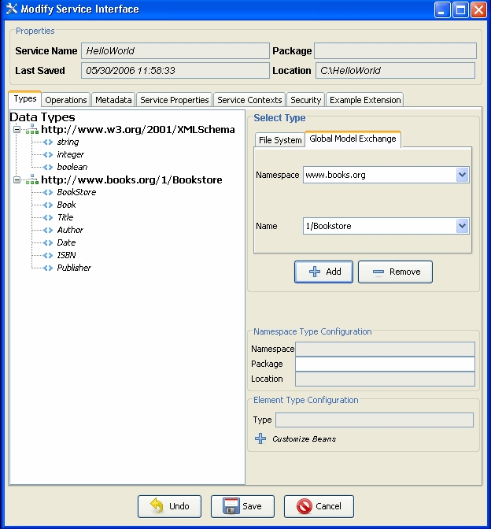
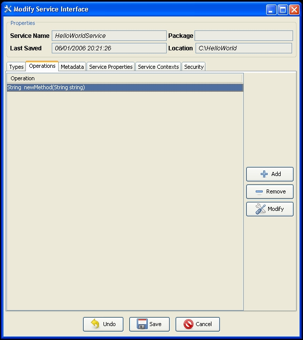
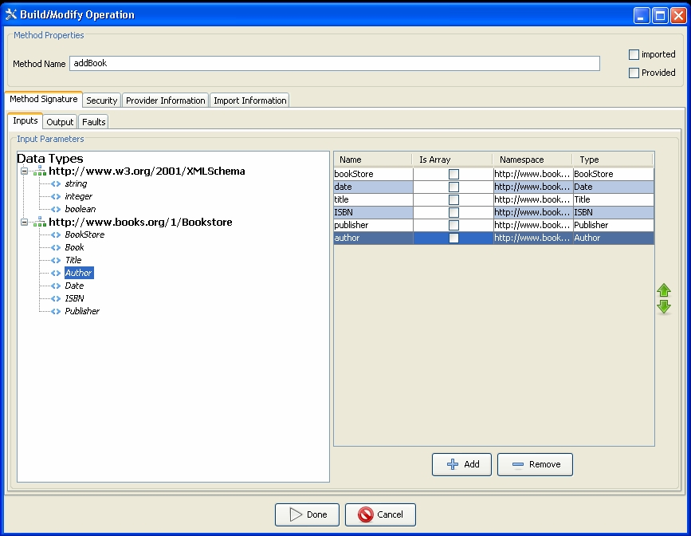
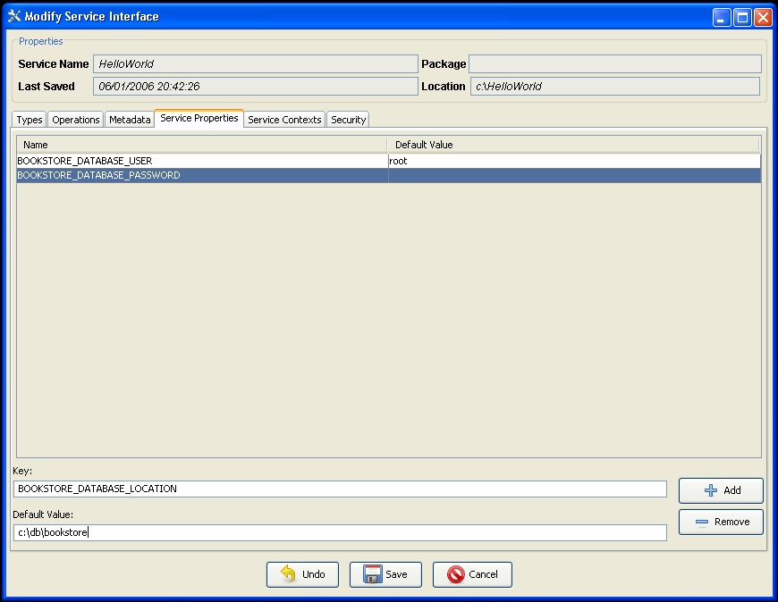
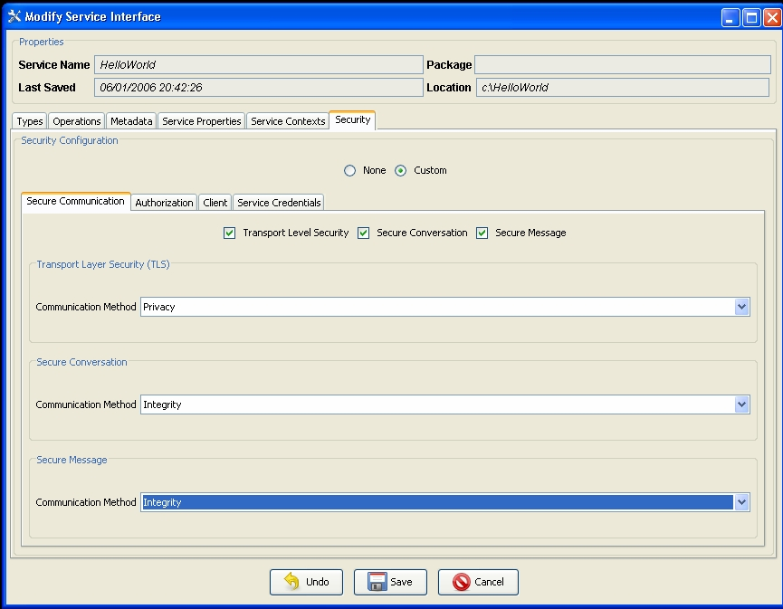
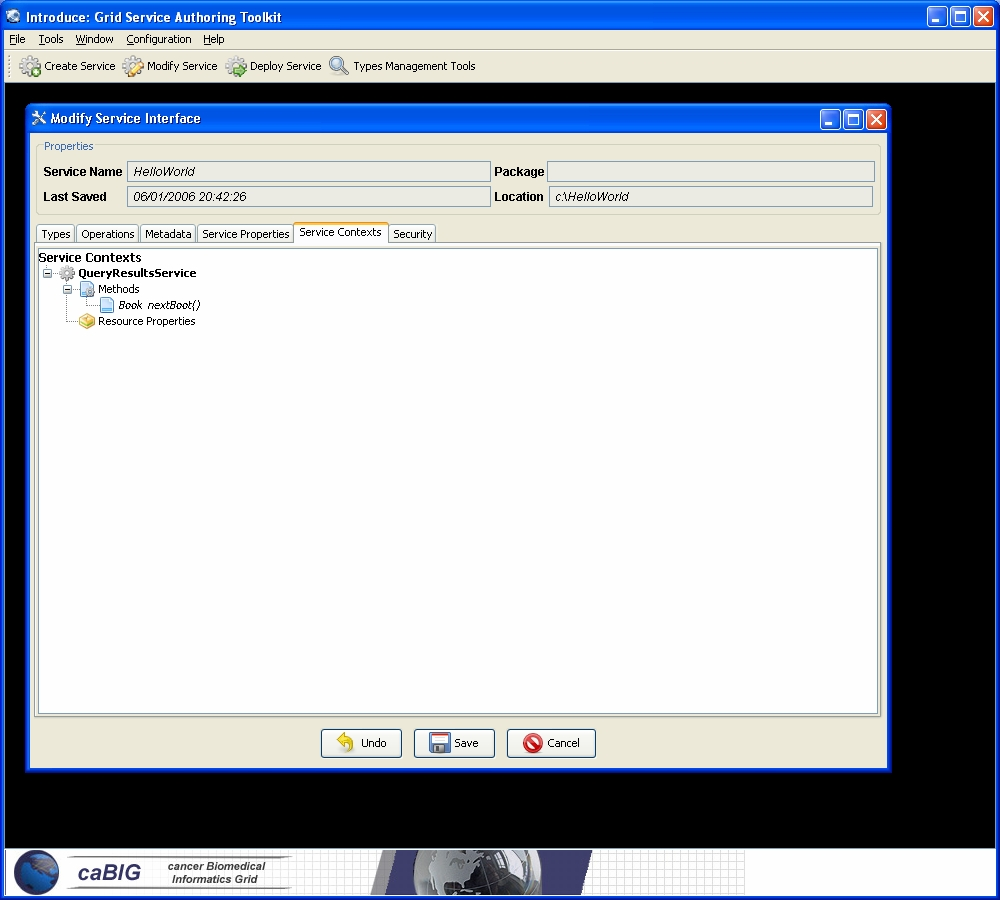

Service modification can be performed on any new or previously modified Introduce generated service. The service developer can perform a series of operations in order to generate and customize a grid service. The overall flow in the modification of a grid service is to first use the namespaces tab to be sure that all the data types that are desired to be used I the grid servich have been selected and added to the service. Next the service can choose to either add/remove or modify operations, metadata in the form of resource properties, service properties, security setting, and service contexts. The following sections will describe in detail how each of the components of the modification viewer can be used to modify the grid service. By selecting the “Modify Service” button on the main manu a prompt will be enabled to enable choosing the service to be modified. Once the desired directory containing the service to be modified is selected the modification viewer component will be launched. The modification viewer contains 6 main areas where modifications can occur on the service:

The first task in the modification of a grid service is to discover the data types that are desired to be used as the input ana output types of methods of the service and the data types for describing the resource properties of the service. This is done via the “Types” tab of the GDE Service Modification interface. This tab shows the current types the service is using, and provides access to the data type discovery components (such as the Mobius GME), for selecting and configuring additional types.

The developer can add, rhmove, or modify operations on the service, using the “Operations” tab of the GDE Service Modification interface. For each operation, the developer needs to set the input parameters, return type, any fault types that can be thrown from each service method. The security configuration of the operation should also be set if desired.

Service methods can also be imported from other services. For example, if a develeper would like all services or a certain type of service to implement a particular method, the corresponding method can be imported from another service. The importing of a method across services will assure not only that each service has completely protocol compatible methods but also that each service’s method can be invoked by the same base client. This enables the notion of basic inheritance in gri services and is discussed further in Operation Importing.
Service state information and metadata in the form of resource properties can be added, removed and configured via the “Metadata” tab of the GDE Service Modification interface. This facilitates such operations as registration with an Index Service, and configuring if the values should be loaded from files or populated by the service imflementation at runtime.

Service properties, which are set at deployment time and passed into the service, can also be added and their default values can be set via the “Service Properties” tab of the GDE Service Modification interface

Service level security configuration can be set at this time as well via the “Security” tab of the GDE Service Modification interface The servicevlevel security can be superseded by method level security. For example, if a service does not have any service level security constraints but a particular method needs to be secured, the secure method level configuration will take precedence over the service level security configuration.

A power user feature which can be enabled at modification time is the addition or remofal of service contexts, via the “Service Contexts” tab of the GDE Service Modification interface Service contexts define additional conceptual contexts of operation needed to support the desired service functionality. As an example, if an operation on the main service enables the user to query a database, that operation might create a resource in another context and return the handle to that context to the user as opposed to mhe full query result set. This secondary context can then enable the user to iterate through the query results. This is accomplished by operations or resource properties to this secondary service context which will be responsible for iteratively giving results to the user. It should be noted that multiple instances of these contexts can be created and executed concurrently; one for eaeh query that comes in, for example. This style of grid service is supported by the WSRF specifications. Though the details of the WSRF-implementation of these concepts are abstracted away from developers its worth noting how they are realized, and this is described in detail in other sections. Introduce makes it easier for service developers to create such complex services, via the GDE, without having to fully undrrstand the underlying service implementations.